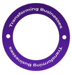

what we do

<section class="what-we-do py-5">
        <div class="container">
            <div class="row align-items-center">

                <!-- LEFT IMAGE -->
                <div class="col-lg-6 mb-4 mb-lg-0">
                    <div class="image-wrapper">

                        

                        <div class="circle-box">
                            
                        </div>

                    </div>
                </div>

                <!-- RIGHT CONTENT -->
                <div class="col-lg-6">

                    <h2 class="problem-title">
                        <strong>What <br> we do?</strong>
                    </h2>

                    <p class="section-desc">
                        We bring structure, governance, and scalability to your technology ecosystem.
                        Our work typically includes:
                    </p>

                    <hr>

                    <ul class="service-list">

                        <li>
                            <svg class="icon-check" viewBox="0 0 24 24">
                                <circle cx="12" cy="12" r="9"></circle>
                                <path d="M9 12l2 2l4 -4"></path>
                            </svg>
                            Gain full visibility into their technology
                        </li>

                        <li>
                            <svg class="icon-check" viewBox="0 0 24 24">
                                <circle cx="12" cy="12" r="9"></circle>
                                <path d="M9 12l2 2l4 -4"></path>
                            </svg>
                            Simplify and consolidate fragmented systems
                        </li>

                        <li>
                            <svg class="icon-check" viewBox="0 0 24 24">
                                <circle cx="12" cy="12" r="9"></circle>
                                <path d="M9 12l2 2l4 -4"></path>
                            </svg>
                            Build a clear, scalable technology roadmap
                        </li>

                        <li>
                            <svg class="icon-check" viewBox="0 0 24 24">
                                <circle cx="12" cy="12" r="9"></circle>
                                <path d="M9 12l2 2l4 -4"></path>
                            </svg>
                            Improve operational efficiency
                        </li>

                        <li>
                            <svg class="icon-check" viewBox="0 0 24 24">
                                <circle cx="12" cy="12" r="9"></circle>
                                <path d="M9 12l2 2l4 -4"></path>
                            </svg>
                            Reduce risk and increase control
                        </li>

                    </ul>

                </div>

            </div>
        </div>
    </section>


    .what-we-do {
    background: #f5f5f5;
}

/* IMAGE */

.image-wrapper {
    position: relative;
    text-align: center;
}

.main-img {
    width: 100%;
    max-width: 480px;
}

/* CIRCLE */

.circle-box {
    position: absolute;
    top: 50%;
    left: 50%;
    transform: translate(-50%, -50%);
}

.circle-rotate {
    width: 120px;
    animation: rotateCircle 10s linear infinite;
}

/* ROTATION */

@keyframes rotateCircle {
    from {
        transform: rotate(0deg);
    }

    to {
        transform: rotate(360deg);
    }
}

/* RIGHT SIDE */

.problem-title strong {
    font-size: 60px;
    color: #4b0f73;
    line-height: 1.2;
}

.section-desc {
    font-size: 18px;
    color: #555;
    margin-top: 15px;
}

.service-list {
    list-style: none;
    padding: 0;
    margin-top: 20px;
}

.service-list li {
    display: flex;
    align-items: center;
    gap: 10px;
    margin-bottom: 12px;
    font-size: 17px;
}

.icon-check {
    width: 22px;
    height: 22px;
    stroke: #6b2bbd;
    fill: none;
    stroke-width: 2;
}

/* RESPONSIVE */

@media(max-width:992px) {

    .problem-title strong {
        font-size: 45px;
    }

    .main-img {
        max-width: 360px;
    }

    .circle-rotate {
        width: 100px;
    }

}

@media(max-width:768px) {

    .problem-title {
        text-align: center;
    }

    .section-desc {
        text-align: center;
    }

    .service-list {
        max-width: 350px;
        margin: auto;
    }

    .circle-rotate {
        width: 90px;
    }

}

@media(max-width:480px) {

    .problem-title strong {
        font-size: 34px;
    }

    .circle-rotate {
        width: 75px;
    }

}